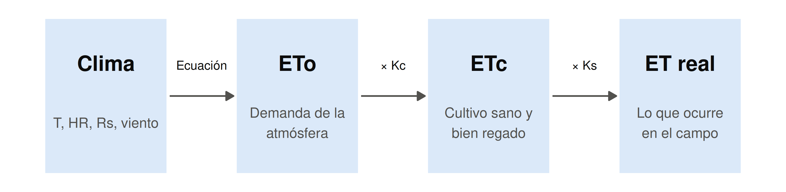
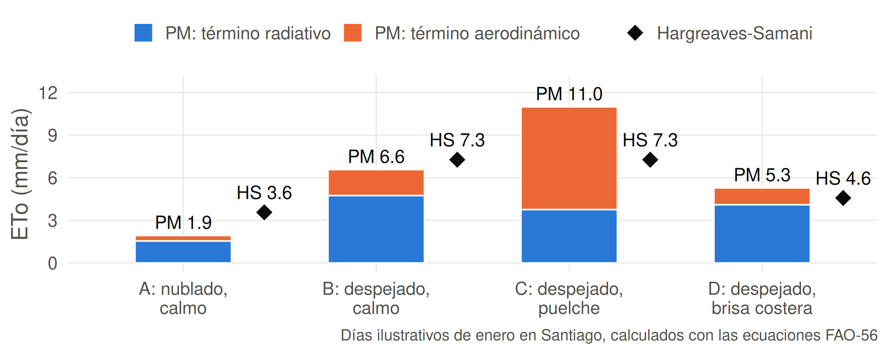
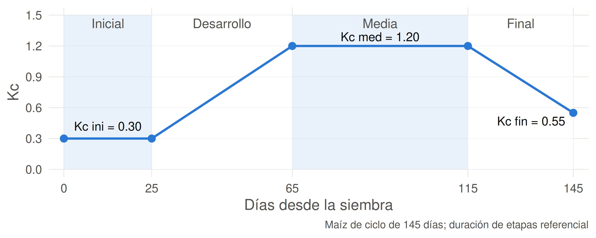
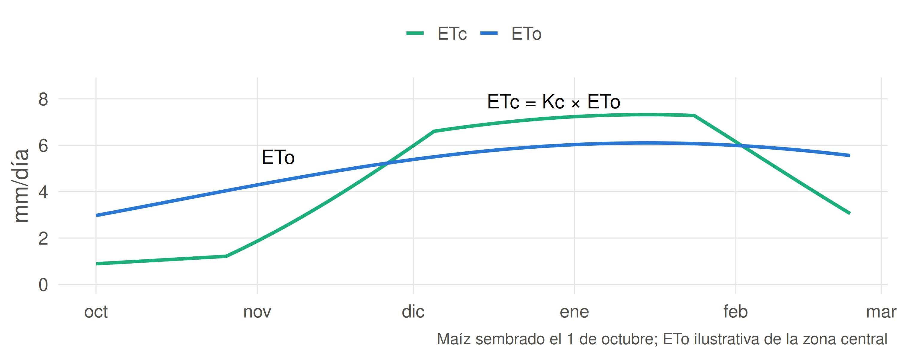

Sesión 4.2: Evapotranspiración de referencia y de cultivo
Mismo huerto de la zona central, mismo sol, misma temperatura y misma humedad.
Tu estación solo tiene termómetro. ¿Puedes saber qué día regar más?
El método de solo temperatura entrega el mismo valor para ambos días.
Hoy aprenderás a calcular la ETo con dos métodos y a elegir cuál conviene según los datos que tengas.
Ideas fuerza de la sesión anterior:
Ahora: convertimos esos factores en un número de mm/día, con datos de una estación meteorológica.
| Unidad | 4 — Requerimiento hídrico de los cultivos |
| Sesión | 4.2 |
| RAA | RAA6 |
| Duración | ~90 minutos |
| Contenido | ETo, Penman-Monteith FAO-56, Hargreaves-Samani, \(ET_c = K_c \times ET_o\), curva de Kc, variables fisiológicas |
Al finalizar esta sesión, serás capaz de:

\[ ET_{real} = K_s \times K_c \times ET_o \]
Hoy calculamos la ETo y la ETc. El coeficiente de estrés \(K_s\) lo trabajaremos en la Unidad 5.
La evapotranspiración de referencia (ETo) es la ET de una superficie estándar de pasto, siempre bien regada.
| Propiedad del cultivo de referencia | Valor FAO-56 |
|---|---|
| Altura | 0.12 m |
| Albedo (\(\alpha\)) | 0.23 |
| Resistencia de superficie | 70 s/m |
| Estado | Sano, en crecimiento activo, sin falta de agua |
Como la superficie está fija, la ETo cambia solo cuando cambia el clima.
| Método | Qué necesita | Uso típico |
|---|---|---|
| Lisímetro con pasto | Tanque de suelo que se pesa | Investigación; calibra los demás métodos |
| Penman-Monteith FAO-56 | \(T_{max}\), \(T_{min}\), HR, \(R_s\), viento | Estándar internacional; estaciones completas |
| Hargreaves-Samani | \(T_{max}\), \(T_{min}\), latitud y fecha | Lugares con solo termómetro; series antiguas |
| Bandeja de evaporación | Lectura de bandeja × coeficiente | Predios sin estación meteorológica |
Hoy calculamos los dos más usados: Penman-Monteith y Hargreaves-Samani.
\[ ET_o = \frac{0.408\, \Delta\, (R_n - G) + \gamma\, \dfrac{900}{T + 273}\, u_2\, (e_s - e_a)}{\Delta + \gamma\, (1 + 0.34\, u_2)} \]
| Símbolo | Variable | Unidad |
|---|---|---|
| \(R_n\), \(G\) | Radiación neta y flujo de calor del suelo | MJ/m²/día |
| \(T\) | Temperatura media del aire a 2 m | °C |
| \(u_2\) | Velocidad del viento a 2 m | m/s |
| \(e_s - e_a\) | Déficit de presión de vapor (DPV) | kPa |
| \(\Delta\) | Pendiente de la curva de \(e_s\) | kPa/°C |
| \(\gamma\) | Constante psicrométrica | kPa/°C |
\[ ET_o = \underbrace{\frac{0.408\, \Delta\, (R_n - G)}{\Delta + \gamma(1 + 0.34\, u_2)}}_{\text{Término radiativo}} + \underbrace{\frac{\gamma\, \frac{900}{T+273}\, u_2\, (e_s - e_a)}{\Delta + \gamma(1 + 0.34\, u_2)}}_{\text{Término aerodinámico}} \]
| Término | ¿Qué representa? | Depende de |
|---|---|---|
| Radiativo | Energía disponible para evaporar | \(R_n\), \(G\) |
| Aerodinámico | Capacidad del aire para llevarse el vapor | \(u_2\), DPV |
Ejemplo: cerca de Santiago, 15 de enero, 500 m de altitud.
| Variable | Valor |
|---|---|
| \(T_{max}\) / \(T_{min}\) | 31 °C / 14 °C |
| Humedad relativa media | 55% |
| Viento a 2 m (\(u_2\)) | 2 m/s |
| \(R_s\) | 28 MJ/m²/día |
\[ T = \frac{31 + 14}{2} = 22.5\ °\text{C} \]
Usamos la misma ecuación de \(e_s\) de la sesión 4.1:
\[ e^\circ(T) = 0.6108\, \exp\!\left(\frac{17.27\, T}{T + 237.3}\right) \]
\[ e^\circ(31) = 4.49 \text{ kPa} \qquad e^\circ(14) = 1.60 \text{ kPa} \qquad e_s = \frac{4.49 + 1.60}{2} = 3.05 \text{ kPa} \]
\[ e_a = e_s \times \frac{HR}{100} = 3.05 \times 0.55 = 1.68 \text{ kPa} \]
\[ DPV = e_s - e_a = 3.05 - 1.68 = 1.37 \text{ kPa} \]
Pendiente de la curva de saturación:
\[ \Delta = \frac{4098\, e^\circ(T)}{(T + 237.3)^2} = \frac{4098 \times 2.73}{(22.5 + 237.3)^2} \approx 0.165 \text{ kPa/°C} \]
Constante psicrométrica (depende de la altitud \(z\) a través de la presión \(P\)):
\[ P = 101.3 \left(\frac{293 - 0.0065\, z}{293}\right)^{5.26} = 95.5 \text{ kPa} \]
\[ \gamma = 0.000665 \times P = 0.064 \text{ kPa/°C} \]
Retomamos el cálculo de la sesión 4.1:
\[ R_n = (1 - 0.23) \times 28 - 5 = 16.6 \text{ MJ/m}^2\text{/día} \]
A escala diaria, \(G \approx 0\).
En este ejemplo usamos \(R_{nl} \approx 5\) MJ/m²/día. En el Taller 4 lo calcularás con la ecuación FAO-56, a partir de \(T_{max}\), \(T_{min}\), \(e_a\) y la razón \(R_s/R_{so}\).
Denominador (común a ambos términos):
\[ \Delta + \gamma(1 + 0.34\, u_2) = 0.165 + 0.064 \times (1 + 0.34 \times 2) = 0.2725 \]
Término radiativo:
\[ \frac{0.408 \times 0.165 \times 16.6}{0.2725} = 4.10 \text{ mm/día} \]
Término aerodinámico:
\[ \frac{0.064 \times \frac{900}{295.5} \times 2 \times 1.37}{0.2725} = 1.96 \text{ mm/día} \]
ETo = 4.10 + 1.96 ≈ 6.1 mm/día
Problema: Mismo día del ejemplo, pero el viento sube a \(u_2 = 5\) m/s. Conserva los demás datos (\(\Delta\), \(\gamma\), \(R_n\), DPV, \(T\)).
Resuelve en 6 minutos.
\[ ET_o = 0.0023 \times 0.408\, R_a \times (T + 17.8) \times \sqrt{T_{max} - T_{min}} \]
| Componente | ¿Qué aporta? |
|---|---|
| \(R_a\) (MJ/m²/día) | Radiación en el tope de la atmósfera; depende de latitud y fecha |
| \(T + 17.8\) | Efecto de la temperatura |
| \(\sqrt{T_{max} - T_{min}}\) | Aproxima la nubosidad: un día despejado tiene mayor oscilación térmica |
| Ciudad (lat. S) | Ene | Feb | Mar | Abr | May | Jun | Jul | Ago | Sep | Oct | Nov | Dic |
|---|---|---|---|---|---|---|---|---|---|---|---|---|
| Copiapó (27.4°) | 42.9 | 39.8 | 35.0 | 28.3 | 22.8 | 20.2 | 21.3 | 25.8 | 32.1 | 37.9 | 41.8 | 43.4 |
| Santiago (33.5°) | 43.3 | 39.2 | 33.2 | 25.5 | 19.5 | 16.7 | 17.9 | 22.8 | 29.9 | 36.9 | 41.9 | 44.1 |
| Chillán (36.6°) | 43.4 | 38.7 | 32.1 | 24.0 | 17.7 | 14.9 | 16.1 | 21.2 | 28.6 | 36.2 | 41.8 | 44.3 |
| Temuco (38.7°) | 43.4 | 38.4 | 31.4 | 22.9 | 16.5 | 13.7 | 14.9 | 20.0 | 27.7 | 35.7 | 41.7 | 44.4 |
Valores en MJ/m²/día, calculados con la ecuación FAO-56 para el día representativo de cada mes.
En verano las cuatro ciudades reciben casi lo mismo. En invierno, la diferencia entre Copiapó y Temuco es de 6.5 MJ/m²/día, lo que refleja el efecto de la latitud.
Mismo día del ejemplo: \(T_{max} = 31\) °C, \(T_{min} = 14\) °C, enero en Santiago (\(R_a = 43.3\)).
\[ T + 17.8 = 22.5 + 17.8 = 40.3 \qquad \sqrt{T_{max} - T_{min}} = \sqrt{17} = 4.12 \]
\[ ET_o = 0.0023 \times 0.408 \times 43.3 \times 40.3 \times 4.12 \approx 6.8 \text{ mm/día} \]
Penman-Monteith entregó 6.1 mm/día: Hargreaves dio 0.7 mm/día más, sin usar viento, humedad ni radiación medida.
Problema: Usa los datos que anotaste de redmeteo.cl (estación cercana a tu casa, día de ayer).
Si no tienes datos, usa Santiago: \(T_{max} = 26\) °C, \(T_{min} = 10\) °C.
Resuelve en 4 minutos.

Los días B y C tienen igual temperatura, así que Hargreaves entrega 7.3 mm/día para ambos. Penman-Monteith capta el viento: 6.6 y 11.0 mm/día.
| Criterio | Penman-Monteith FAO-56 | Hargreaves-Samani |
|---|---|---|
| Datos | \(T\), HR, \(R_s\), viento | Solo \(T_{max}\) y \(T_{min}\) |
| Base | Física: energía y transporte de vapor | Empírica |
| Precisión | Método de referencia | Mejor en promedios de 5 días o más |
| Viento fuerte | Lo incorpora | Tiende a subestimar |
| Alta humedad | La incorpora | Tiende a sobrestimar |
Con estación completa, usa Penman-Monteith. Con solo termómetro, usa Hargreaves y compáralo con una estación completa cercana.
La evapotranspiración de cultivo (ETc) es la ET de un cultivo sano, bien regado y con buen manejo:
\[ ET_c = K_c \times ET_o \]
| Situación | Significado |
|---|---|
| \(K_c < 1\) | El cultivo evapotranspira menos que el pasto de referencia |
| \(K_c > 1\) | Evapotranspira más, por su altura, rugosidad y área foliar |
Ejemplo: maíz en etapa media, \(K_c = 1.20\) y \(ET_o = 6.1\) mm/día → \(ET_c \approx 7.3\) mm/día.
| Cultivo | \(K_{c,ini}\) | \(K_{c,med}\) | \(K_{c,fin}\) |
|---|---|---|---|
| Maíz (grano) | 0.30 | 1.20 | 0.35-0.60 |
| Tomate | 0.60 | 1.15 | 0.70-0.90 |
| Papa | 0.50 | 1.15 | 0.75 |
| Vid de mesa | 0.30 | 0.85 | 0.45 |
| Nogal | 0.50 | 1.10 | 0.65 |
| Palto (sin cubierta vegetal) | 0.60 | 0.85 | 0.75 |
Valores de referencia para clima subhúmedo (\(HR_{min} \approx 45\%\), \(u_2 \approx 2\) m/s) y manejo estándar. FAO-56 entrega correcciones para otras condiciones.

El Kc se mantiene constante en las etapas inicial y media, y varía en línea recta en las etapas de desarrollo y final.
| Etapa | Cobertura | Domina | Kc |
|---|---|---|---|
| Inicial | Menos de 10% | Evaporación del suelo | Bajo; sube si el suelo se moja con frecuencia |
| Desarrollo | De 10% hasta cobertura efectiva | Pasa de E a T | Sube en línea recta |
| Media | Completa | Transpiración | Máximo |
| Final | Follaje envejece | Transpiración en descenso | Baja según madurez y manejo de la cosecha |
En un mismo clima, la etapa fenológica puede cuadruplicar la ETc.

Al inicio la ETc es muy inferior a la ETo. En la etapa media la supera. Total de la temporada: ETo = 757 mm y ETc = 688 mm.
Problema: Un agricultor tiene 20 ha de maíz, en el día 45 desde la siembra. Usa la curva de Kc anterior. La estación informa \(ET_o = 4.8\) mm/día.
Resuelve en 5 minutos.
Volvemos a la pregunta de la sesión 4.1:
| Paso | Cálculo | Resultado |
|---|---|---|
| Clima | Penman-Monteith, 15 de enero | \(ET_o = 6.1\) mm/día |
| Cultivo | Maíz en floración, \(K_c = 1.20\) | \(ET_c = 7.3\) mm/día |
| Lámina a volumen | \(7.3 \times 10\) m³/ha | 73 m³/ha/día |
| Camiones | \(73 / 10\) | ≈ 7 camiones aljibe por hectárea |
La ETc supone un cultivo sin estrés. Las variables fisiológicas de la Unidad 3 indican si la planta está alcanzando esa tasa.
| Variable | Instrumento | Qué señala |
|---|---|---|
| Potencial hídrico de tallo (\(\Psi\)) | Cámara de presión | Tensión del agua en la planta |
| Conductancia estomática (\(g_s\)) | Porómetro | Grado de apertura de los estomas |
| Flujo de savia | Sensor en el tronco | Transpiración de cada planta |
| Temperatura de la hoja | Termómetro infrarrojo, cámara térmica | Una hoja más caliente que lo normal indica cierre estomático |
La ETc estima cuánta agua reponer. La planta muestra si el riego está siendo suficiente.
Situación: Asesoras 5 ha de vid de mesa en el valle central, en plena temporada de enero. El predio solo tiene termómetro: \(T_{max} = 32\) °C, \(T_{min} = 12\) °C, \(R_a = 43.3\) MJ/m²/día.
Resuelve en 6 minutos.
| Término | Definición |
|---|---|
| ETo | ET de un pasto de referencia bien regado; refleja la demanda del clima |
| ETc | ET de un cultivo específico sin restricciones: \(K_c \times ET_o\) |
| ET real | ET que ocurre en el campo: \(K_s \times K_c \times ET_o\) |
| Penman-Monteith FAO-56 | Método estándar de ETo, con datos climáticos completos |
| Hargreaves-Samani | Método de ETo que usa temperatura y \(R_a\) |
| Radiación extraterrestre (\(R_a\)) | Radiación en el tope de la atmósfera; depende de latitud y fecha |
| Coeficiente de cultivo (Kc) | Razón entre la ETc de un cultivo y la ETo |
| Kc ini, Kc med, Kc fin | Valores de Kc en las etapas inicial, media y final |
La ETo es la ET de un pasto estándar bien regado: mide la demanda del clima
Penman-Monteith suma un término radiativo y uno aerodinámico; necesita \(T\), HR, \(R_s\) y viento
Hargreaves-Samani solo necesita temperatura y \(R_a\), pero no incorpora el viento ni la humedad
\(ET_c = K_c \times ET_o\): el Kc agrega el efecto del cultivo
La curva de Kc tiene cuatro etapas y sigue el paso de la evaporación a la transpiración
\(ET_{real} = K_s \times ET_c\): las variables fisiológicas muestran si el cultivo alcanza la ETc
Sesión 4.3 — Tecnologías y plataformas para estimar ET
Para preparar: entra a redmeteo.cl, elige una estación y anota qué variables entrega. Con ellas, ¿podrías usar Penman-Monteith o solo Hargreaves?
¿Cuál es la diferencia entre ETo, ETc y ET real?
¿Por qué Penman-Monteith requiere más datos que Hargreaves-Samani? ¿Cuándo usaría cada uno?
¿Qué representan los términos radiativo y aerodinámico de Penman-Monteith?
En Hargreaves-Samani, ¿qué información aporta la raíz de \(T_{max} - T_{min}\)?
Para un cultivo de maíz en etapa media con \(K_c = 1.2\) y \(ET_o = 5.6\) mm/día, calcule la ETc y el volumen diario para 8 ha.
¿Cómo cambia Kc a lo largo del ciclo de un cultivo anual? Relacione ese cambio con E y T.
Una estación costera con alta humedad usa Hargreaves-Samani. ¿Esperaría una ETo sobrestimada o subestimada? Justifique.
TAG2027 — Relación Suelo Agua Planta | UDLA